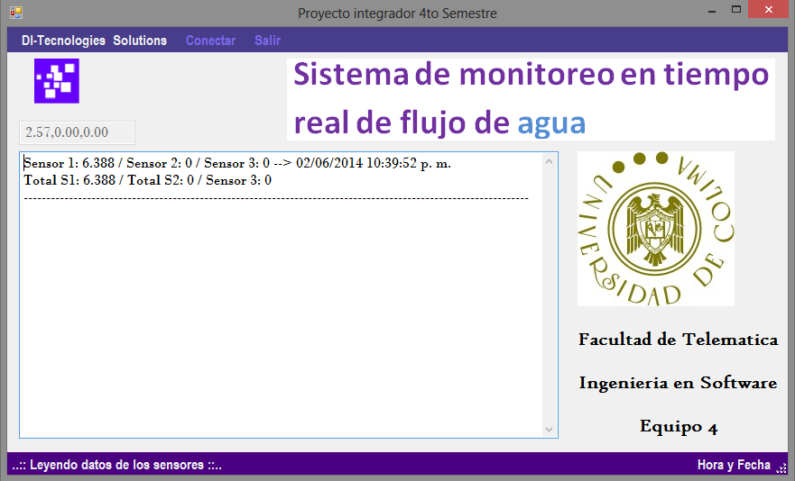
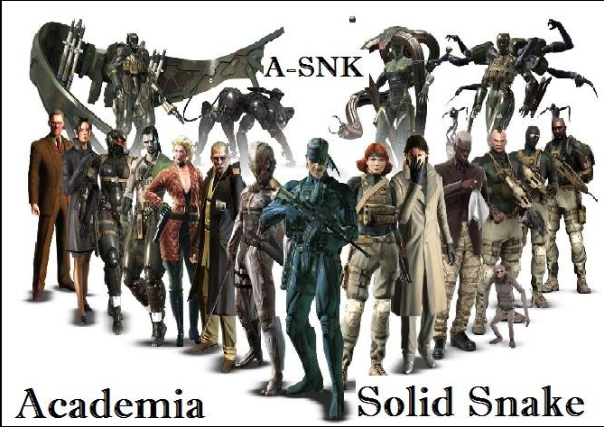

A continuación se muestran los proyectos en los que he trabajado, ya sean escolares, personales y pertenecientes a la futura empresa Pegasus Technology. En cada uno de los proyectos sera posible ir al repositorio en github de este o a la página web si es posible.

Sistema de tarjeas de prepago para el transporte público en zona conurbada Colima-Villa de Álvarez.
Con este software se pretende ayudar en el cobro del transporte público, esto para poder hacerlo más rápido, seguro, cómodo y eficiente tanto para los usuarios como para los prestadores del servicio.
Se cuenta con una bases de datos creada en Access, la cual contiene diferentes tablas para poder usar el software, una de ellas son los clientes que van a usar el transporte, asignándoles un tipo de usuario para diferentes descuentos. La otra son las unidades de transporte público y la última pero no menos importan donde se guardaran todos las transacciones hechas por las personas.
El software puede ser manejado por 2 personas principales, clientes y administradores, los administradores tienen la capacidad de agregar usuarios, agregar camiones, actualizar información de los usuarios, eliminar usuarios, etc. Por parte del usuario este ingresa a que unidad se subió, el programa automáticamente identifica que tipo de persona es y hace el descuento de saldo pertinente.
De igual manera se tiene un apartado de análisis estadístico, donde se calculan todos los pagos realizados para poder sacar graficas donde se muestran las modas, medianas, etc.

Proyecto concurso de emprendedores.
Página web para el concurso Entrepreneur Challenge en el estado de Colima, está especialmente para el proyecto de la empresa MQT.
En esta página se muestran los principales productos que vendemos, siendo el principal producto una blusa que se puede transformar en bolsa, y que a su vez es una bolsea que se puede transformar en una blusa.
Se cuenta con un sistema de carritos de compra, en el cual seleccionas el producto a comprar y se te envía a un formulario donde puede el cliente poner datos referentes a su cuenta bancaria o la opción de pagar mediante pay-pal.

Conocer la eficiencia del servicio brindado por las bibliotecas de la Universidad de Colima
Con este programa se puede recopilar y administrar datos referentes al servicio que brindan las Bibliotecas de la Universidad de Colima, esto con el fin de mejorar.
Lo que hace este software de consola es pedir a cada uno de los usuarios de las bibliotecas llenar una serie de preguntas (10 como mínimo) las cuales se guardan en un archivo .txt para su posterior análisis.
El administrador de la biblioteca tiene la posibilidad de ver las respuestas que los usuarios dieron al sistema para así tomar decisiones.

Sistema para medir y controlar el agua utilizada en la Universidad de Colima.
Este proyecto recopila la cantidad de agua utilizada durante un día en algún edificio, si se gasta más del límite establecido se manda una alerta mediante un e-mail a las personas encargadas para que tomen cartas en el asunto.
La medición de la cantidad de agua se hace colocando sensores de flujo de agua en bajantes por donde corre este líquido, cada milisegundo se envía una señal mediante bites que el software aquí desarrollado es capaz de convertir a valores enteros numéricos, que después se guardan en una base de datos junto con la fecha y el número del sensor que envía los datos, todo esto para su posterior análisis.
Además de esto se cuenta con una página web, en la cual podemos ir viendo la cantidad de agua gastada hasta el momento así como los datos registrados por cada sensor en tiempo real.
Para ejecutar este software se requieren los sensores conectados y una previa conexión a internet, ya que la base de datos esta implementada remotamente.

Página web para la empresa Serlimcova en Colima.
Esta fue creada para dar a conocer a la comunidad que circula por internet los servicios que ofrece esta empresa a nivel local, faltan cosas por optimizar pero poco a poco se llega a mucho.
Esta página web cuenta con un diseño responsivo, es decir se adapta a todas las pantallas de los celulares, tablets, computadoras, etc. También es creada con HTML5 capturando y usando las tecnologías para el uso de API´s como la de Google Maps, así como la de video y audio. Tiene un formulario de contacto mediante el cual nos puede enviar a nuestro correo cualquier inquietud que tenga. Se cuenta con un slider de 5 imágenes en la página principal, más de 6 categorías y un footer bien diseñado donde mostrar datos importantes, redes sociales y la opción de imprimir la página mostrada..

Software especializado para el manejo de clientes de esta empresa, permitiendo conocer que usuarios estan proximos a vencer sus contratos mediante alertas por correos al presidente de Directorio Colimense.

Pequeña pagina web creada para el juego en linea Ikariam, especialmente para la alianza Solid Snake del extinto servidor Eta..

Creación propia con base de datos en MySql y C#.
Este software incluye un loggin el cual está vinculado con una tabla en la base de datos, se puede agregar un nuevo usuario desde el loggin. Desde el mismo loggin el usuario puede generar una nueva contraseña (para esto se pide el correo con el cual se registró así como su número de celular). El usuario debe incluir correo, contraseña y otros datos importantes; la contraseña se guarda con una codificación SAS la cual genera una cadena de 52 caracteres.
La tienda o el almacén cuenta con 5 categorías, y cada categoría cuenta con 20 productos cada uno. Al mostrar el catalogo el usuario se puede mover sobre cada una de estas categorías, al seleccionar algún producto se abrirá otra ventana donde se puede ver más características de este e incluso seleccionar cuantos productos quiere para al final agregarlo al carrito.
Una vez finalizada la selección de productos se envía una muestra de todos los productos por comprar con la capacidad de eliminar ese producto. Al aceptar los productos a comprar se le manda un correo al usuario con la lista de artículos comprados.
El software cuenta con la opción de descontar la cantidad de productos comprados de la base de datos, de igual manera el cliente no puede comprar la cantidad total de productos en almacén, esto para dar opción de que alguien más conozca el producto.
Aplicacion web para gestionar un productos de un almacen.
Mediante esta aplicacion web se pueden gestionar pedidos de clientes, cuenta con diferentes niveles como lo pueden ser administradores y secretarias.
Los administradores pueden agregar productos, eliminarlos, agregar proveedores, rechazarlos, etc.
Las secretarias pueden cambiar el nivel de estado de unproducto, pasando desde aceptado hasta inconcluso.
Ademas esta aplicacion cuenta con un diseño responsivo, es decir se adapta a todas las pantallas de celulares, tablets, computadores, etc.

Conocer la eficiencia del servicio brindado por las bibliotecas de la Universidad de Colima.
Con este programa se puede recopilar y administrar datos referentes al servicio que brindan las Bibliotecas de la Universidad de Colima, esto con el fin de mejorar.
Lo que hace este software de consola es pedir a cada uno de los usuarios de las bibliotecas llenar una serie de preguntas (10 como mínimo) las cuales se guardan en un archivo .txt para su posterior análisis.
El administrador de la biblioteca tiene la posibilidad de ver las respuestas que los usuarios dieron al sistema para así tomar decisiones.

Ingeniería en Software por parte de la Facultad de Telemática en la Universidad de Colima.
Design by Edsel Barbosa